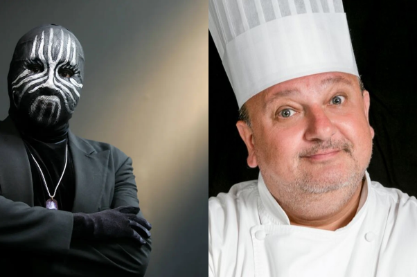

O caminho até dia 18
Basta descer a página que verá a nossa história...
A nossa história começa aqui!
Foi no lugar certo, na hora certa. Mais especificamente no canto direito onde não conseguimos ver na foto..
O encontro de Mister M e Master Chef
Como todos costumavam dizer, éramos Mister M e Master Chef, cada um com seu motivo especial .E assim foi por 9 longos meses, de março a dezembro.
O “primeiro encontro” que não foi o primeiro encontro

No meio de todo esse tempo encontramos tempo para bate-papos, milk-shakes, ajuda com compras, acompanhar em idas ao shopping e tudo o mais, mas o que definiu que teríamos mesmo um encontro oficial foi esse lugar, se não fosse por ele, eu não teria tido o passeio mais agradável que já tive em Sao Caetano.
O primeiro encontro oficial, o primeiro beijo, o primeiro frio na barriga, o momento mais inesquecível

Não tem como esquecer dos puffs, das estrelas azuis, do Sol batendo no nosso rosto enquanto
aguardávmos aquela sessão de “A Janela Mágica”. O momento de maior coragem que já tive até
hoje, e o momento onde eu aprendi que desde que seja por você vale a pena enfrentar qualquer
coisa, e mesmo quando estivermos bem velhinhos farei a pergunta que mais importante do nosso
relacionamento..
E se....